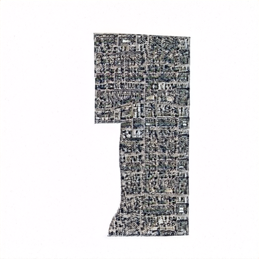
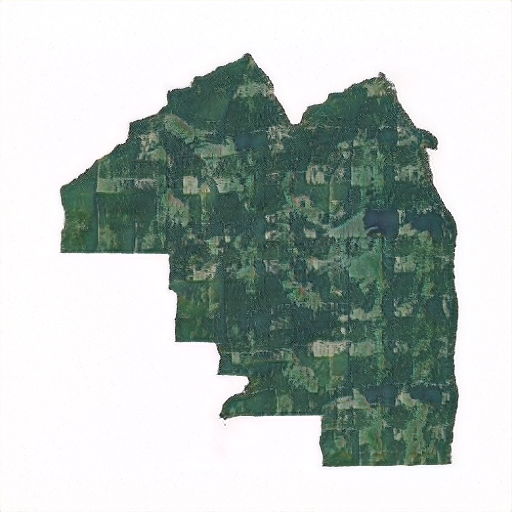

Census Tract 1, Weld County, Colorado

Synthesized Census Tract (Urban)

Census Tract 1.01, Whitfield County, Georgia

Synthesized Census Tract (Rural)

These are places that do not exist, a collection of imaginary U.S. Census tracts conjured up by the StyleGAN2-ada deep generative model. The real U.S. Census tracts - 74,134 in total - are the most granular official subdivision of the United States. Their unique shapes and features are being chronicled by artist Neil Freeman [1] through his Twitter bot @everytract, which posts aerial photography of every census tract, one tract every half hour. Following other work in ultra-realistic generative creation, notably This Person Do Not Exist [2], I probe the artistic realism and creative understanding of state-of-the-art machine learning. This project uses the U.S. Census aerial images to train one of the most highly performant generative models, StyleGAN2-ada [3]. The result is a machine-imagined view of artificial geography and communities, some dreamlike and some remarkably real.